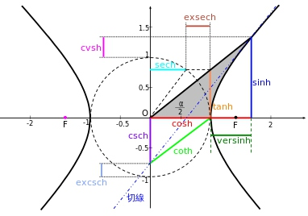
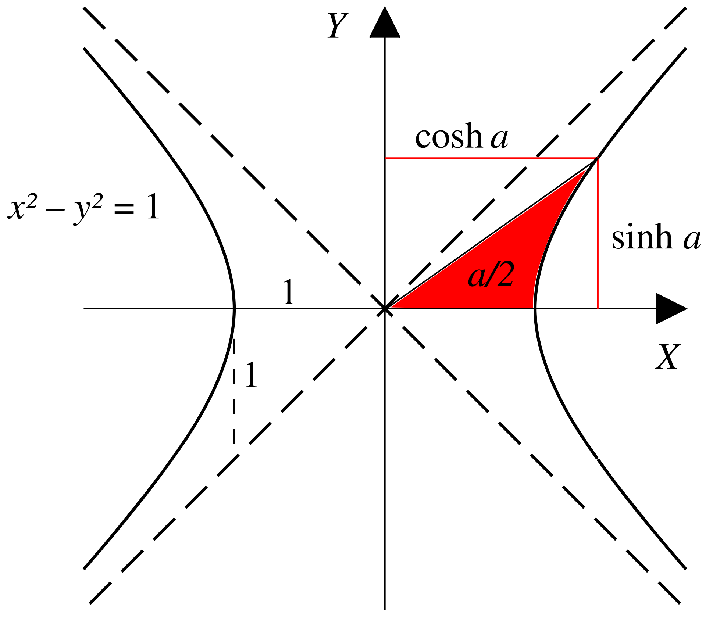
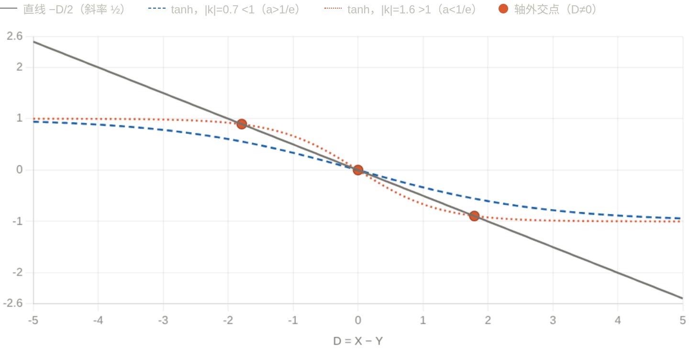

例1:解析代数
已知椭圆\(C:\frac{x^2}{4}+\frac{y^2}{3}=1\),函数\(y=m^{x+1}+n(m\ge 2)\)交椭圆于\(A,B\)两点，求\(n\)的最大值。
设\(A(x_0,y_0),B(-x_0,-y_0),x_0\in(0,2),y_0\in(0,\sqrt{3})\)，有：
\(\begin{cases} y_0=m^{x_0+1}+n,(1)\\ -y_0=m^{-x_0+1}+n,(2)\\ \frac{x_0^2}{4}+\frac{y_0^2}{3}=1,(3) \end{cases}\)
考虑到一共有\(x_0,y_0,m,n\)四个变量，以及三个约束条件，故有\(4-3=1\)个自由度.
显然如果可以确定其中一个变量的范围，其他变量的范围便迎刃而解:
为了在得到恒等变形的同时利用对称性，考虑(1)+(2)和(1)-(2)，则充要条件为:
\[\begin{cases} -2n=m(m^{x_0}+m^{-x_0}),(4)\\ 2y_0=m(m^{x_0}-m^{-x_0}),(5)\\ \frac{x_0^2}{4}+\frac{y_0^2}{3}=1,(3) \end{cases}\]
做几个简单的观察:
- 由(4)不难看出\(n\lt 0\).
- 在(4)中,\(m^{x_0}\gt 1\),则\(m\)越大,\(-2n\)越小,\(n\)越大
- (5)中m越大，2y_0越小，且\(m\ge 2\),通过放缩可以消去\(m\)
于是，我们进一步进行无损放缩(m=2):
\[\begin{cases} -2n\ge 2(2^{x_0}+2^{-x_0}),(6)\\ 2y_0\ge 2(2^{x_0}-2^{-x_0}),(7)\\ \frac{x_0^2}{4}+\frac{y_0^2}{3}=1\ge \frac{x_0^2}{4}+\frac{2^{2x_0}+2^{-2x_0}-2}{3},(\alpha) \end{cases}\]
(\(\alpha\))正是解题的关键！不难看出\(\frac{x_0^2}{4}+\frac{2^{2x_0}+2^{-2x_0}-2}{3}\)关于\(x_0\)单调递增，解得\(x_0\le 1\).
于是根据(6)有:
\[\begin{gathered} n\le -(2^{x_0}+2^{-x_0})\le -\frac{5}{2} \end{gathered}\]
数学背景:双曲三角函数


双曲三角函数由双曲线\(x^2-y^2=1\)导出，故称为双曲函数
\[\begin{cases} \sinh x=\frac{e^x-e^{-x}}{2},\\ \cosh x=\frac{e^x+e^{-x}}{2}\ge 1,\\ \tanh x=\frac{\sinh x}{\cosh x}=\frac{e^x-e^{-x}}{e^x+e^{-x}}=\frac{e^{2x}-1}{e^{2x}+1}\lt 1 \end{cases}\]
类似于三角函数，双曲函数有对应的恒等变换公式:
\[\begin{gathered} \cosh^2 x-\sinh^2 x=1,\\ \cosh^2 x+\sinh^2 x=\cosh 2x,\\ \sinh(x+y)=\sinh x\cosh y+\cosh x\sinh y\\ \sinh(x-y)=\sinh x\cosh y-\cosh x\sinh y\\ \cosh(x+y)=\cosh x\cosh y+\sinh x\sinh y\\ \cosh(x-y)=\cosh x\cosh y-\sinh x\sinh y\\ \tanh(x+y)=\frac{\tanh x+\tanh y}{1+\tanh x\tanh y}\\ \tanh(x-y)=\frac{\tanh x-\tanh y}{1-\tanh x\tanh y}\\ \end{gathered}\]
详细内容见维基百科
处理例一(4)(5)时，也可以类比\(\cosh^2 x-\sinh^2 x=1\),考虑平方再相加
例2
若\(f(x)=a^{x-1}\)和\(g(x)=\log_a x+1\)有三个交点，求\(a\)的取值范围:
当\(a\gt 1\)时，\(f(x)=a^{x-1}\)单调递增，且\(f(x),g(x)\)互为反函数，那么假如交点不在\(y=x\)上:
设交点为\((x,y)\),则必有成对的交点\((y,x)\),只要\(x\neq y\),则与单调性矛盾.
这意味着\(y=a^{x-1}\)作为一个下凸函数与\(y=x\)有两个交点，显然推出矛盾:
故\(0\lt a\lt 1\),此时显然有一个交点\((1,1)\)，而另外两个交点都不能在\(y=x\)上，则两个配对的交点都不在\(y=x\)上，有一对\((x,y),(y,x)\)为符合题意的交点:
\[\begin{cases} a^{x-1}=y,(1)\\ a^{y-1}=x,(2) \end{cases}\]
\[\begin{gathered} a^{x-1}+a^{y-1}=x+y,\\ a^{x-1}-a^{y-1}=y-x \end{gathered}\]
令\(k=\ln a\lt 0,x-1=u,y-1=v\),则:
\[\begin{gathered} e^{ku}+e^{kv}=u+v+2,(3)\\ e^{ku}-e^{kv}=v-u,(4) \end{gathered}\]
再令\(u+v=S,u-v=D\)
\[\begin{cases} e^{\frac{kS}{2}}(e^{\frac{kD}{2}}+e^{-\frac{kD}{2}})=S+2,(5)\\ e^{\frac{kS}{2}}(e^{\frac{kD}{2}}-e^{-\frac{kD}{2}})=-D,(6) \end{cases}\]
(5)/(6)得：
\[\boxed{\tanh(\frac{kD}{2})=-\frac{D}{S+2}}\]
以上是\(x,y\)存在满足的必要条件.

当\(S\)固定时,\(y=-\frac{1}{S+2}D\)是一条直线,考虑它与\(y=\tanh(\frac{kD}{2})\)有三个交点.
显然,由图像可知,\(y=\tanh \frac{kD}{2}\)在\(D=0\)处的斜率为\(\frac{k}{2}\).
那么如果\(-\frac{1}{S+2}\gt \frac{k}{2}\),则直线与双曲正切函数会有三个交点.
如果\(-\frac{1}{S+2}\le \frac{k}{2}\),则直线与双曲正切函数只有一个交点.
由(3):
\[\begin{gathered} S+2=e^{ku}+e^{kv}\ge 2e^{k\frac{S}{2}} \end{gathered}\]
如果\(S\lt 0\),则\(2\gt S+2\ge 2e^{k\frac{S}{2}}\gt 2\),导致矛盾.
所以\(S\ge 0\).
临界条件\(S\to 0,k\to -1,a\to \frac{1}{e}\)
把"在 \(S\to0\) 比斜率"换成一个单变量、全局的论证,彻底绕开两个未知量纠缠的麻烦。最干净的是回到不动点语言。
设 \(f(x)=a^{x-1}\)(\(0<a<1\)),轴外对就是 \(g(x)=f(f(x))\) 除 \(x=1\) 外的不动点。考察
\[\psi(x)=f(f(x))-x,\qquad \psi(1)=0.\]
第一步:\(\psi\) 至多 3 个零点。 算导数,记 \(w(x)=f(x)+x-2\),则
\[\psi'(x)=f'(f(x))f'(x)-1=(\ln a)^2\,a^{\,w(x)}-1.\]
而 \(w'(x)=a^{x-1}\ln a+1\) 严格增(因 \(a^{x-1}\ln a\) 增),故 \(w\) 是先减后增的下凸函数,有唯一极小;于是 \(a^{w(x)}\)(底数 \(<1\))是先增后减的"单峰",\(\psi'\) 也单峰:在 \(\pm\infty\) 处趋于 \(-1\),中间可能抬到正值。这意味着 \(\psi'\) 至多变号两次,\(\psi\) 形如"减→增→减",至多 3 个零点。再加上反函数对称性,非平凡零点只能成对出现,所以轴外对至多一对。
第二步:门槛恰是 \(\psi'(1)=0\)。 在已知零点 \(x=1\) 处,
\[\psi'(1)=f'(1)^2-1=(\ln a)^2-1.\]
- 若 \((\ln a)^2\le1\)(即 \(a\ge\frac1e\)):则 \(\psi'(1)\le0\)。结合单峰结构可验证 \(\psi\) 在 \(x=1\) 两侧不再穿过零(它在 \(1\) 处下穿,且两端也朝 \(-\),中间的正峰若存在也够不到产生新交点),故只有 \(x=1\) 一个零点,仅一个交点。
- 若 \((\ln a)^2>1\)(即 \(a<\frac1e\),因 \(\ln a<0\) 即 \(\ln a<-1\)):则 \(\psi'(1)>0\),\(\psi\) 在 \(x=1\) 处上穿零点。但 \(\psi(x)\to+\infty\ (x\to-\infty)\)、\(\psi(x)\to-\infty\ (x\to+\infty)\)(用 \(0<a<1\) 直接验两端极限),配合单峰导致的"减增减"形状,\(x=1\) 两侧各逼出一个新零点,恰好一对轴外解。
第三步:连续性收口(取代你的 \(S\to0\))。 第二步已是充要,但若想说清"这对解为何在 \(a=\frac1e\) 处诞生":由 \(\psi'(1)=(\ln a)^2-1\) 随 \(a\) 连续,当 \(a\uparrow\frac1e\) 时 \(\psi'(1)\downarrow0\),那对零点连续地并入 \(x=1\)(即 \(D\to0\))。这才是"\(S\to0\)"现象的正确出处——它是结论的极限行为,不是用来当前提的判据。
于是充要地:
\[\text{三个交点}\iff(\ln a)^2>1\ \text{且}\ 0<a<1\iff \boxed{0<a<\tfrac1e}.\]
例3
(2021清华强基)定义\(x*y=\frac{x+y}{1+xy}\),则\((...(2*3)*4)...)*21=\)__.
不难看出此题的背景是双曲正切函数.
令\(x=\frac{u-1}{u+1},y=\frac{v-1}{v+1},x*y=\frac{uv-1}{uv+1}\),其中:
\[\begin{cases} u=-\frac{x+1}{x-1},\\ v=-\frac{y+1}{y-1} \end{cases}\]
记\(g(x)=-\frac{x+1}{x-1}\),则:
\[\begin{gathered} (x*y)*z=(\frac{g(x)g(y)-1}{g(x)g(y)+1})*z=\frac{g(x)g(y)g(z)-1}{g(x)g(y)g(z)+1} \end{gathered}\]
\((...(2*3)*4)...)*21=\frac{g(2)g(3)...g(21)-1}{g(2)g(3)...g(21)+1}\)
其中\(g(2)g(3)g(4)...g(21)=\frac{-3}{1}\frac{-4}{2}\frac{-5}{3}...\frac{-22}{20}=\frac{21\times22}{1\times2}=231\)
所求\(=\frac{230}{232}=\frac{115}{116}\)